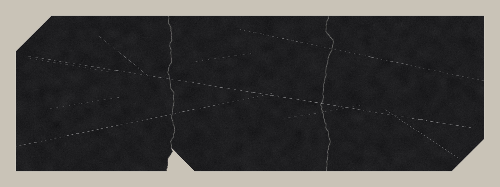

赤い糸の先 ／ 第三話
黒い紙の継ぎ目
「この封筒、表には何と書いてあった？」
瀬尾に聞かれ、水城は野鳥園の箱からもう一枚取り出した。
「園長宛て。差出人の欄は空白」
「裏を探せと言ったのは誰？」
「係長のところに、別件の担当から照会が来たらしい。こっちが三枚の写真を送った直後だったから、私も同じ件だと思った」
瀬尾は返事をせず、頬に当てていた冷たい紙コップを机に置いた。水城が封筒の写真を裏返すと、台紙の白いほうが、内側へ巻こうとした。
「昨夜のメダルも、同じに見えるところから始まったね」
「だから今回は、どこが同じかだけを見たい」

午後になって、照会元から写真が二枚届いた。一枚は舞踏会が開かれた屋敷の予告状。もう一枚は停電した屋敷に残されていたものだった。
水城はどの封筒にも黒い紙があると気づいていた。白っぽい封筒の真ん中に、黒い印が一つ。どれも一角が斜めに欠けている。
「同じ人が同じ印を使った、って言いたくなるね」
水城が言うと、瀬尾は写真を指一本分ずらした。
「この線、端で切れてる」
瀬尾は、封の黒い部分だけを同じ縮尺で紙に出した。切り口を見たいと言って、黒を薄く出したものも作った。水城が明るい蛍光灯の下へ持っていくと、紙の色の向こうに細い線が何本か見えた。
野鳥園 舞踏会の屋敷
舞踏会の屋敷 停電した屋敷
停電した屋敷一本は、写真を撮ったときに入った光の筋かと思うほど薄かった。野鳥園の写真では、それが斜めに走って、紙の端で途切れている。
水城は舞踏会のものを隣に置いた。線はつながらなかった。瀬尾が何も言わずに停電した屋敷の写真を手前に引いたので、水城は二枚を取り替えた。今度は線の先が、ほとんど同じ角度で現れた。
「もう少し、こっち」
水城が写真をわずかにずらすと、切り口の小さな出っ張りが、隣の紙の凹みに収まった。瀬尾は三枚目を持ち上げ、残った端につけた。
線はそこでも続いた。
三枚の写真の下から、一枚の黒い紙が出てきたようだった。水城はしばらく、それぞれの封筒に印刷された事件番号を見ていた。

係長は、写真を見てから報告書を読み始めた。
「一枚の紙を切ったことは書ける。三通を出したのは同じ人か」
瀬尾は水城を見た。水城は報告書の次の行を指した。
「そこは保留です。紙が三か所に渡る前は、一か所にあった。ひとまず分かるのはそこまでです」
係長は眼鏡を外した。
「分かった。三件の担当にも見せる。写真の男の件は？」
「まだ確認中です」
「そう書いておいてくれ」
係長が帰ったあと、水城は封筒の写真を、男の写真とは別の列に置いた。列の間に、昨日より広く隙間をとった。
作業を切り上げる頃、広報から確認しそびれた写真が二枚届いた。同じ喫茶店の、別々の事件当夜の写真だという。封筒とは関係のない、溜まっていた仕事の一つだった。
瀬尾は上着に片腕を通したところで、一枚目を横からのぞいた。
「外、降ってるね」
水城は二枚目を開いた。画面の隅に、また赤い傘があった。